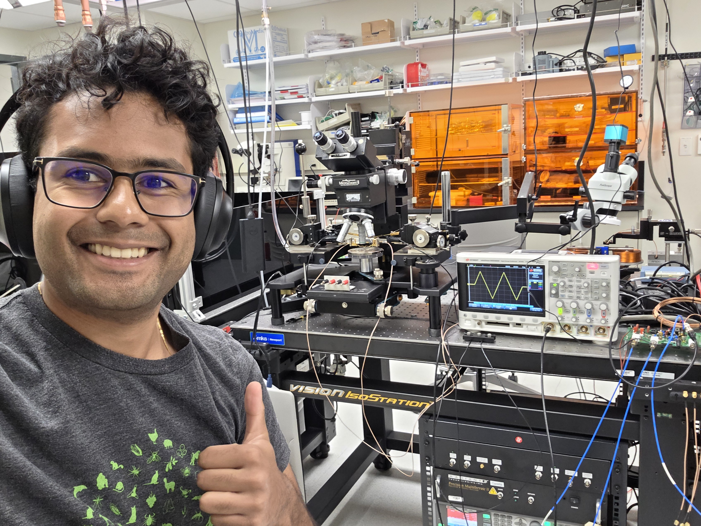

Research

In the lab — measurement and characterization work.
Honors Thesis
Characterization of Probabilistic Polarization in Ferroelectric PZT Thin Films
Sc.B. Thesis · Department of Electrical, Computer, and Systems Engineering
Read thesis (PDF) →
Project page →
Projects
MC/DC — Monte Carlo / Discontinuous Galerkin
CEMeNT · DOE PSAAPMC/DC is a performant, scalable, and machine-portable Python package for fully transient Monte Carlo neutron transport and rapid methods development. Built under the Center for Exascale Monte Carlo Neutron Transport (CEMeNT), a DOE Predictive Science Academic Alliance Program center, the code targets leadership-class supercomputers and supports both CPU and GPU architectures.
I contributed to the codebase and co-authored the associated publication in the Journal of Open Source Software (April 2024).
Project site →
Publications
Loading publications…
PIEC: A Modular Python Package for Easy and Scalable Laboratory Automation
Journal of Open Source Software · Under Review (2026)
github.com/TransluSci/piec →